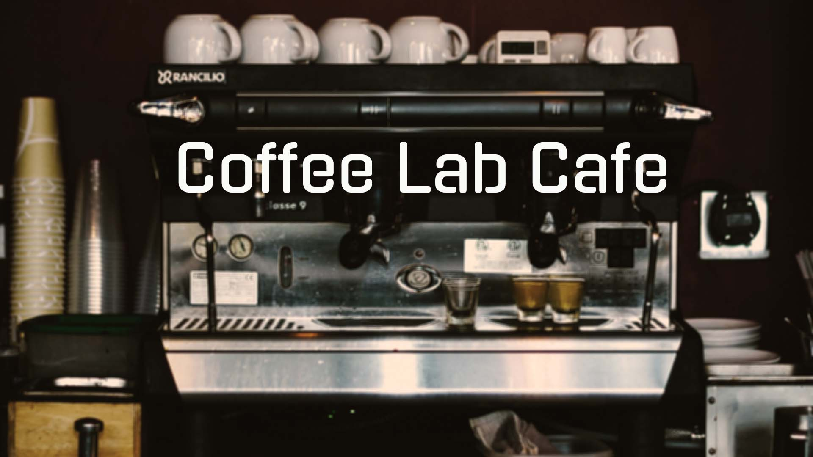
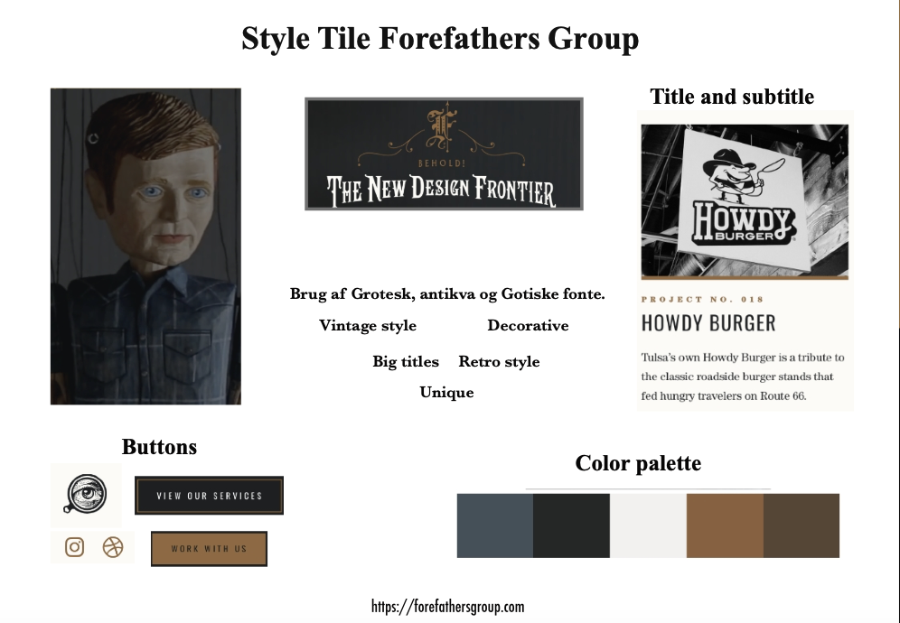
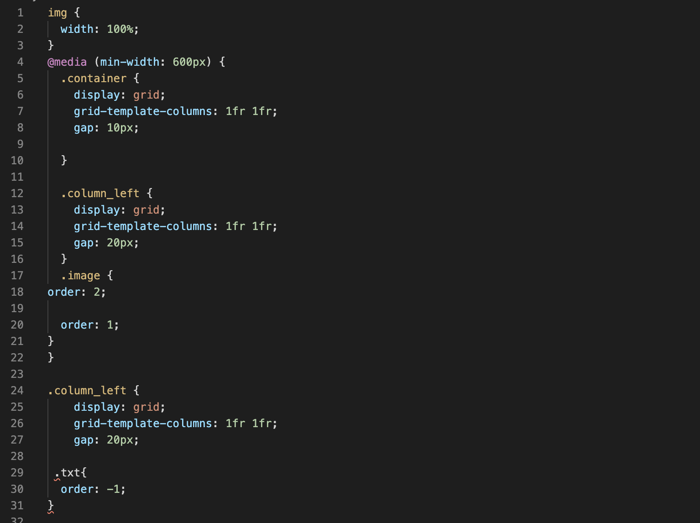
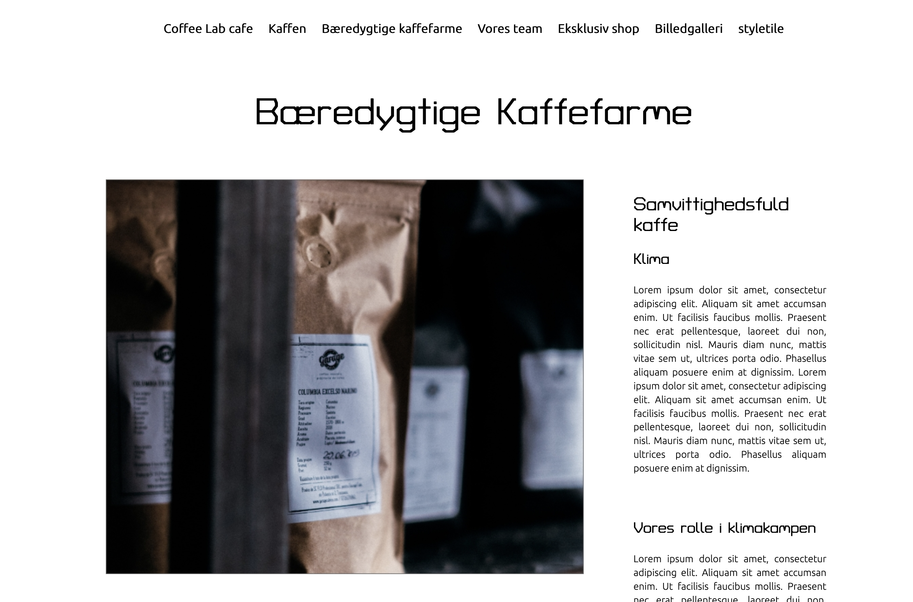
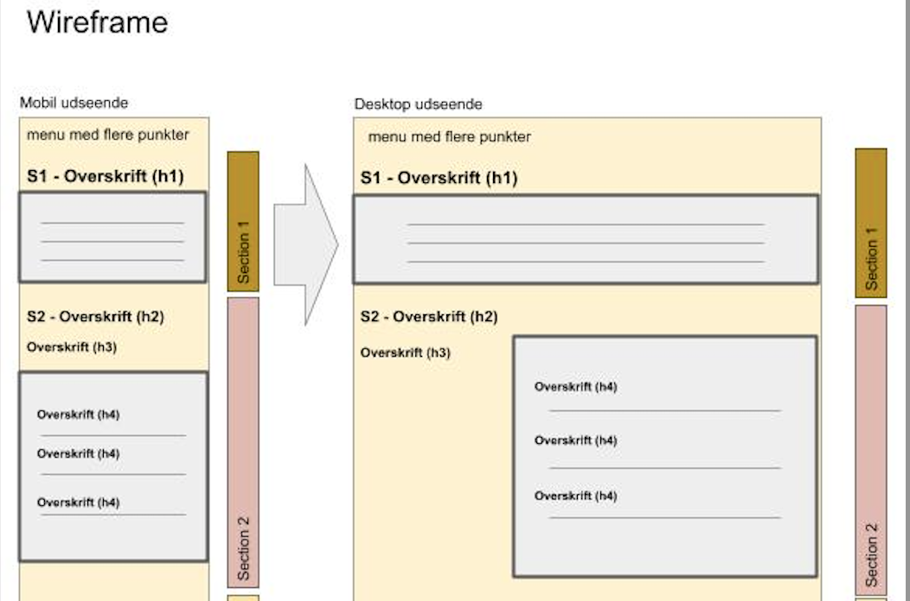
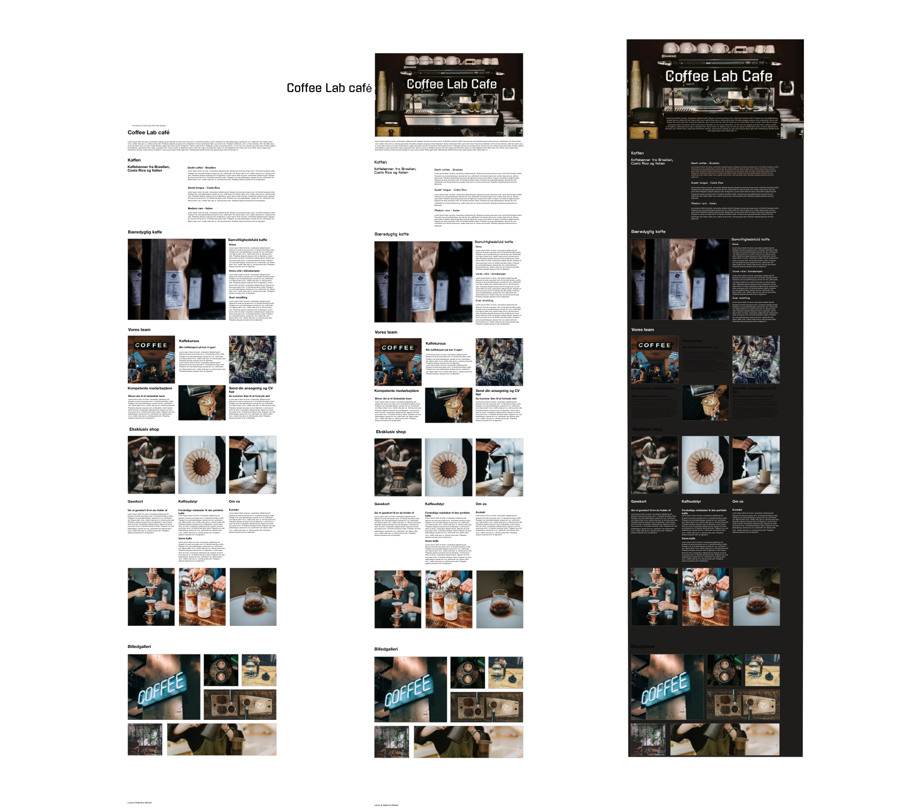

Dette første tema giver en grundlæggende indføringtil de mest anvendte redskaber i en multimediedesigners værktøjskasse. Redskaberne udgørfundamentet for resten af din uddannelsepå MMD.Du vil blive introduceret til grundlæggende fagligebegreber inden for design af digitalebrugergrænseflader, digital indholdsproduktion, digitalkommunikation og responsivt webdesign.Du lærer at sætte websider op i html og css og fårde første hands-on færdigheder inden forudarbejdelse af grafik og billedbehandling i Photoshop,opsætning af tekst og billeder i Adobe XD.

Web
01.Opgave
I forløbet 02-web skulle jeg lave en responsiv hjemmeside med udgangspunkt i designstilen hipster style. Her fik jeg kendskab til faglige begreber inden for design af digitale brugergrænseflader, digital indholdsproduktion, digital kommunikation og responsivt webdesign.
02.Analyse
Jeg lærte blandt andet at analysere og undersøge en designstil. ved hjælp af farveteori, typografi, komposition, style tile mm. kunne jeg få en overordnet design forståelse for hipster style. Hjemmesider som benytter sig af Hipster Style er ofte cafeer, barbershops eller tattoo shops. Hjemmesiderne har ofte store overskrifter med meget fokus på logoet, som ofte også er en del af firmanavnet og typografien. Mange af hjemmesiderne har benyttet sig af en splash billede eller splash video på startsiden. Farverne er ofte naturlige afdæmpede farver med et retro patina look. Billederne er ligeledes redigeret til at have et faded, grumset patina udtryk. Typografien er en blanding af groteske, antikva og gotiske fonte, det må gerne se lidt eksklusivt ud.
03.Process

Jeg udarbejdede moodboards på baggrund af hipster stilen og cafeer, som gav mig inspiration til at arbejde på et passende splash billede til hjemmesiden. Her brugte jeg photoshop til at redigere billedet til at blive mere grynet og sløret samt dæmpelse af lysstyrken. Jeg brugte jordfarver, fandt passende billeder med vintage redigeret udtryk og fonten Ubuntu som er personlig og moderne. En lille opgave var også at designe et ikon, som for mit vedkommende blev en lille kop med et C i som kan ses oppe i fanebladet af websitet. Vigtigheden af at dokumentere din process og designvalg blev klargjort for mig i dette forløb. De kreative valg var taget med udgangspunkt i det foregående research samt en personlig visuel vurdering i forhold til hjemmesidens givne layout.
04.Kodning
I dette forløb lærte jeg vs code at kende. Jeg fik kendskab til html og css. Html er i mine øjne skelettet for hjemmesiden mens css’en er stylingen. Jeg lærte hvordan et html dokument er opbygget: head, body og footer. Jeg fik kendskab til de ord/tags man bruger når man f.eks skal skrive en overskrift, brødtekst, lister eller sætte billeder ind. Jeg fik også kendskab til hvordan man sætter det op i et html dokument ud fra et givent layout diagram. Man kan have flere html dokumenter som er linket til hinanden så man kan klikke på et ord/overskrift og føre en hen til det linkede sted enten på samme html side eller på en helt ny fane. Css kan lege med det visuelle udtryk og kalde på de html elementer man gerne vil style samt bestemme hvordan elementerne skal placeres ved hjælp af grid og flex. Alt efter hvilken skærmstørrelse man bruger til at se websitet, skal det styles anderledes og det gør man med medie querry i css. Her indsætter man skærmstørrelsen og styler css grid og flex alt efter hvad der ser passende ud. Når siden er så godt som færdig kan man validere den og se om der dukker nogle fejl op. Dette kan man også gøre løbende så man evt kan opdage fejl hen af vejen. Når siden er valideret og der ikke er fejl er den godkendt til at blive afleveret.
05.Links
Link til Hipster style præsentation:
Link til Splashbillede process:
Link til Responsive side 2:
06. Challenges
Det tog sin tid at forstår både html og css, men da jeg begyndte at se det som et nyt sprog jeg skulle lære at forstå var det bare at holde tungen lige i munden og prøve sig frem. Det var en svær balance både at ville lave noget flot visuelt når kodningens evne endnu ikke var særlig trænet. Jeg er derfor ikke blevet tilfreds med dele af websitets udseende og havde jeg haft mere tid havde jeg fundet på en bedre løsning med den tekst som står på forsiden.
07.Hvad har jeg lært?
- Html og Css
- Moodboard og Style tile
- Kendskab til Photoshop
- Wireframe
- Farvelære
- Komposition
- Process
- Typografi
- Ikoner
- Typografi